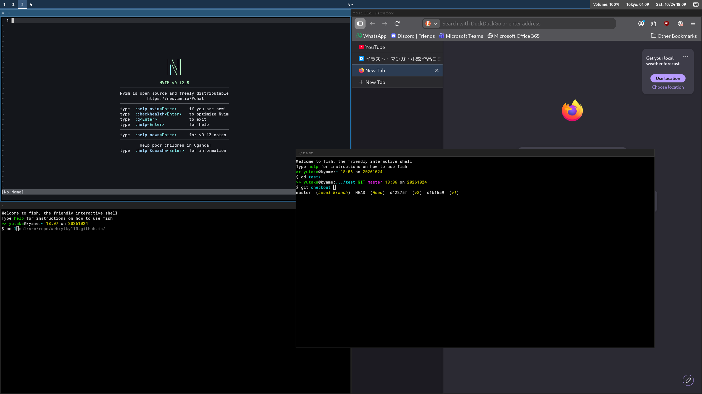

2026/10/24 ポスト一覧
Ministrings の北欧でのツアーが終わり、スイスの家に帰ってきた。 全然パソコンの話を書かなかったので今日はデスクトップ環境について書いていく。
パソコン面では、僕はかなり父に影響を受けている。 今の環境を要約すると、FreeBSDの上にWaylandコンポジタのSwayを乗せ、 ブラウザはFirefox、シェルはfish、エディタはnvimといった所だ。 日本語入力はFcitx5+Anthyを使い、 大西配列に触発されたオリジナルのキーボード配列を 自前のスクリプトで毎回変更している。 これらの設定ファイルは全て公開している。 GNU Stowを使ってインストールしている （他にもオリジナルのパッケージを管理するのにも使っている。 かなり便利である）。 ドットファイルを管理する専用のアプリなどもあるみたいだが、まだ試していない。 話を戻すと、自分で言うのもなんだが、かなり変態的なデスクトップ環境である。
これらのパーツのそれぞれの利点をまとめていく。 swayは設定ファイルが柔軟でさらに全てキーボードで操作でき、 ウィンドウをパネル状でキレイに配置してくれる。 次にfishシェル。補完、履歴やキレイな色分けがすごく便利である。 gitのコミットやマウントファイルシステムなど ただのファイル一覧ではない補完も充実している。 自分はまだ使っていないが、自分で補完システムも構築できる。 さらにシェルスクリプト用の機能が豊富で文法も簡素で使いやすい。 さらにこの機能はfishに組み込まれているので移植性が高い。 このfishのプロンプトにはstarshipを使っている。 カスタムするのが楽しいしキレイで見やすく作れる。 最後はエディタ。vi/Emacs戦争なんかがあるが、 僕はvi派（正確に言うとvim。viは難しすぎる）である。 Emacsも少しだけ使ってみたが、設定や操作の感じがあまり合わなかった。 vimはどこでも乗っているしEmacs Makes Any Computer Slowである（言いたいだけ）。 さらにNeovimには色んな拡張機能が付けられる。 小指を痛めずに拡張機能を使うなら断然こっちだろう。 だが欠点もある。これは僕がここで列挙したソフト全てに言えるが、 設定や構築がめんどくさい。使うだけならそんなに難しくはない筈だが、 しっかりとカスタムして自分に合わせるならかなりの労力が必要になるだろう。 それでも僕は自分に合ったデスクトップ環境を日々探求している。

Neovim、fishとFirefoxを起動した僕のデスクトップの画面。